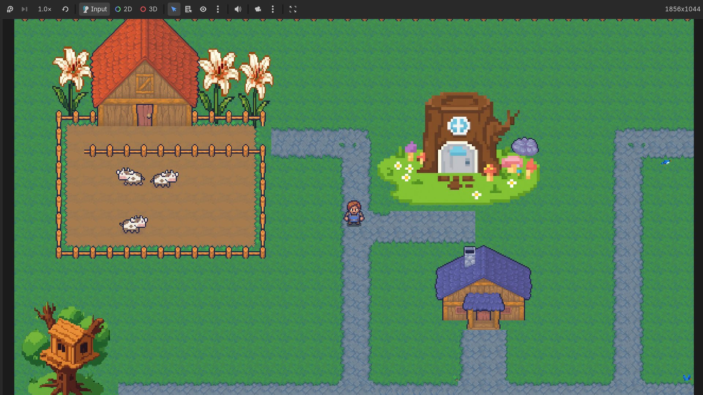
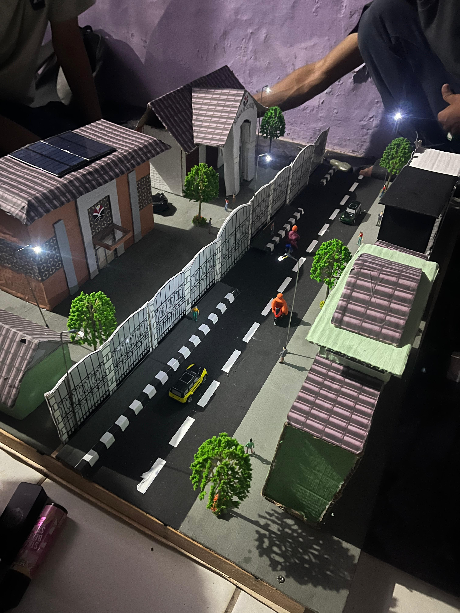
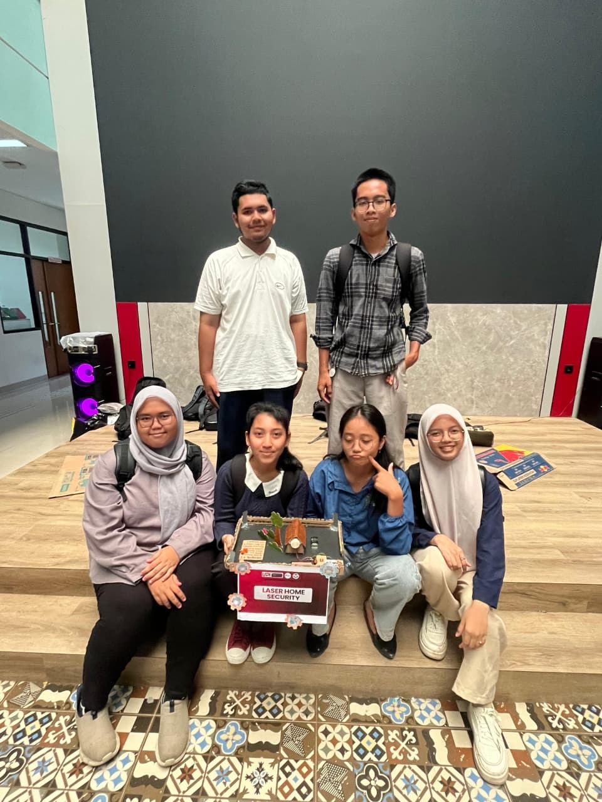

Daftar Project
Berikut adalah beberapa project yang pernah saya buat selama semester 1 dan 2:
Berikut adalah beberapa project yang pernah saya buat selama semester 1 dan 2:

Petualangan Literasi Si Kecil Merancang konsep dan Game Design Document (GDD)
untuk game edukasi bertema literasi anak SD.
meliputi core gameplay, storyline, progression system, reward system, serta
perancangan 5 stage pada wilayah Hutan Ceria.
Berkolaborasi dengan tim art visual, audio, dan programmer dalam menentukan
kebutuhan aset, fitur, obstacle, mini game edukasi, serta sistem level dan
save progress.
Repository: Lihat di GitHub

Membuat miniatur Smart City berbasis tombol switch ON/OFF yang dilengkapi dengan sistem otomatis menggunakan sensor LDR (Light Dependent Resistor).
Miniatur ini juga dilengkapi dengan sensor pendeteksi gempa sebagai fitur keamanan.
Selain itu, sistem menggunakan panel surya untuk menyerap energi matahari yang kemudian disimpan sebagai sumber energi listrik untuk mengoperasikan berbagai komponen pada miniatur Smart City.

Membuat Laser Home Security menggunakan laser dan sensor cahaya untuk menyalakan alarm yang sudah disetting.
Project ini dirancang sebagai simulasi sistem keamanan rumah sederhana yang dapat memberikan peringatan ketika terdeteksi adanya intruder.
| Ringkasan Portofolio Project | |||
| No. | Nama Project | Detail Project | |
| Teknologi | Status | ||
| 1 | Game Mindventure | Python, Godot, GitHub | Selesai |
| 2 | Membuat Smart City | Sensor LDR, Lampu LED, Switch ON/OFF, Panel Surya, Speaker | Selesai |
| 3 | Membuat Laser Home Security | Sensor LDR, Lampu LED, Switch ON/OFF, Speaker | Selesai |